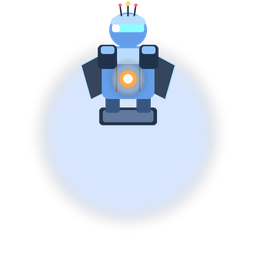

1500

Defesa Espacial
Tower Defense
A galáxia ataca. Sua torre resiste.
GAME OVER
Pontuação: 0
Vitória
O chefão foi derrotado. A galáxia está em paz — por enquanto.
Pontuação: 0
Créditos
Desenvolvedores
Custódio Junio Queiroz Silva
Hugo Henrique de Andrade Cardoso
Disciplina
Computação Gráfica — Trabalho Prático
Orientação
Professor Flávio Roberto dos Santos Coutinho
Opções
Até a próxima!
Obrigado por jogar
Custódio Junio Queiroz Silva
Hugo Henrique de Andrade Cardoso
Computação Gráfica — Trabalho Prático
Professor Flávio Roberto dos Santos Coutinho